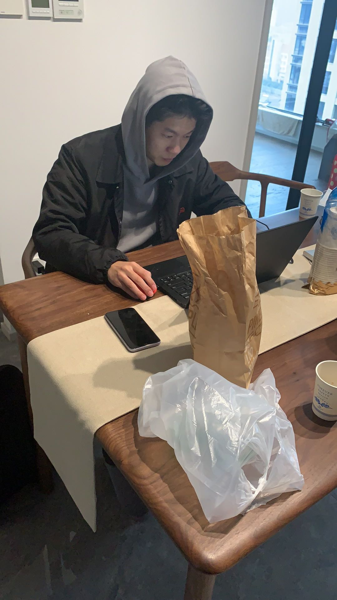

夜半随想
今晚打算给博客首页的TAG更新一下，实现点击能够有标签页出现，思路是通过添加超链接的形式出现。既然都打开电脑了，就更新一下博客吧，随便放点图片好了
禾木的草原
图1是在2021年7月新疆禾木村后面的山坡上拍的。那天起了个大早，刚登上山时，还是灰蒙蒙的，还觉得早起看这破雾血亏。后面太阳出来了，金色的阳光找在绿油油的草地上，山下的村庄炊烟袅袅升起，山上马儿或吃草或奔腾，那一刻我突然脑子里播放起德彪西牧神的午后，感觉生命的意义或许就在于此，在于这广袤的天地之间。
新疆的夜空
图2是在新疆的晚上用延迟摄影拍的星星。其实龙泉能看到的星星比这还多，银河肉眼可见。
加班

图3是2021年过年之前，当天刚从深圳出差回到杭州，准备去朋友家玩马里奥派对，但是当天白天突然通知加班。当时是在帮深圳一个科技独角兽公司做上市准备，所以在朋友家拿出电脑开始搞工作。
疫情
图4是2022年五一假期的时候。那是隔壁县云和突发疫情，我放弃了五一假期，作为疫情防控志愿者驰援云和。拍摄地点是在云和赤石高速路口。我作为志愿者对高速路口上下车辆进行拦截。